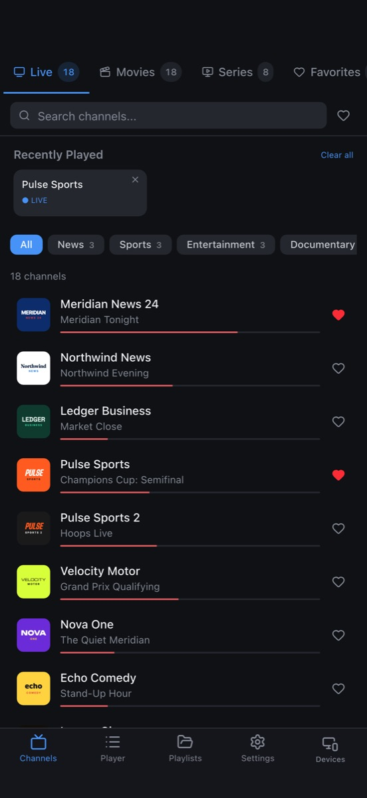
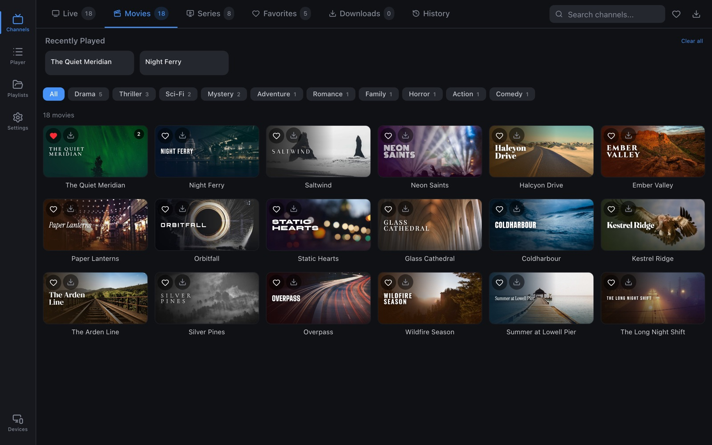
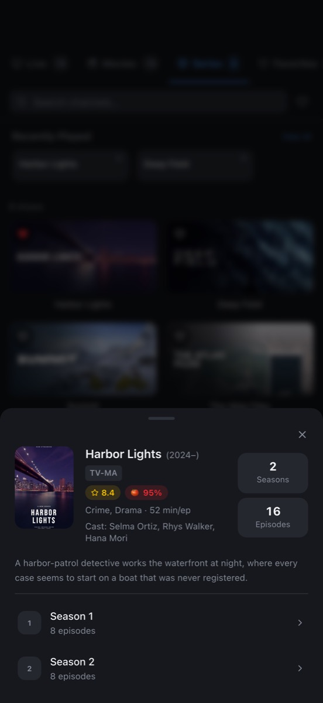
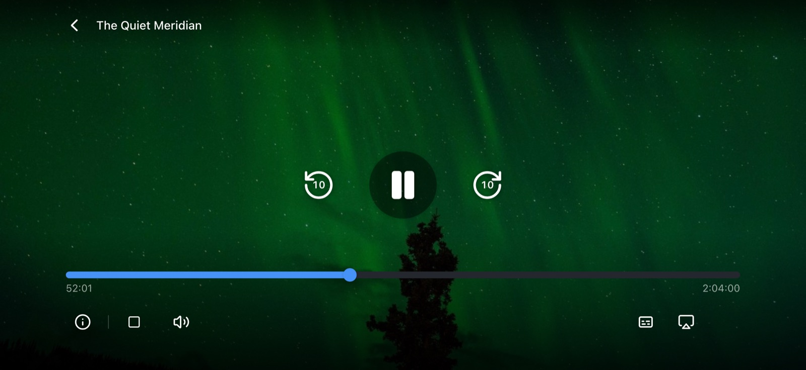

See what's on across every channel
The guide shows now and next for each live channel on one timeline, and you can search by program name. Cinette uses the XMLTV guide that comes with your playlist, or one you add.

Cinette is a free, open-source IPTV player for Mac, iPhone, iPad, Linux, Android and Fire TV. Add an M3U playlist or Xtream Codes login, and see what's on in a TV guide.

It's the same app on each, laid out for a mouse, a touch screen or a TV remote.
The guide shows now and next for each live channel on one timeline, and you can search by program name. Cinette uses the XMLTV guide that comes with your playlist, or one you add.

Movies and series come with the plot, cast and ratings from IMDb and Rotten Tomatoes. Anything you start picks up where you stopped, and series go on to the next episode by themselves, skipping intros and credits if you like.

Video runs through mpv with hardware decoding, so HLS, MPEG-TS, RTMP and RTSP all play. When the stream or your Wi-Fi drops, Cinette reconnects and carries on. Add subtitles from OpenSubtitles and switch audio tracks while you watch.

Send a channel, movie or episode to an Apple TV with AirPlay, or from a Mac or Linux PC to a Chromecast. A movie or episode carries on from where it was. With Cinette on the TV too, your phone becomes the remote: play, pause, seek and change subtitles from the couch.
OpenSubtitles, OMDb and Gemini each need a free API key, which you add in Settings. Ratings and skip times need the OMDb key.
There's no account to make, and the app sends nothing to the developer. Your playlists, logins and history stay on your devices. All the code is on GitHub, and the privacy policy lists each service the app talks to and what it sends.
These links always point at the newest version. Older versions and release notes are on the releases page, and the changelog lists what changed in each one. Once installed, the app updates itself.
There's no version for macOS 14 and earlier.
Open the DMG and drag Cinette into Applications.
Releases that aren't notarized by Apple are blocked by Gatekeeper the first time you open them. To open the app anyway, follow these steps.
If macOS says the app is damaged, run this in Terminal and open it again.
xattr -dr com.apple.quarantine /Applications/Cinette.appThe AppImage includes libmpv, so there's nothing else to install.
chmod +x Cinette_amd64.AppImage
./Cinette_amd64.AppImageIt needs glibc 2.38 or later, which Ubuntu 24.04, Debian 13 and current Fedora releases have.
On Debian and Ubuntu,
sudo apt install ./Cinette_amd64.deb
installs the app and the libraries it needs, including libmpv. It
needs Debian 12, Ubuntu 24.04 or a later release. On Fedora, run
sudo dnf install ./Cinette_x86_64.rpm. Both packages
need WebKitGTK 2.40 or later, which all of these releases have.
Ubuntu 22.04 and releases based on it, such as Linux Mint 21 and Pop!_OS 22.04, aren't supported. Their libmpv is too old for the app, and their glibc is too old for the AppImage.
Most TVs and streaming sticks run 32-bit Android, so they take the TV and Fire TV build.
https://github.com/MaxMB15/Cinette/releases/latest/download/Cinette_armeabi-v7a.apkOpen the phone and tablet build's link on the device, and let your browser install apps when Android asks.
When a new version is out, Cinette shows Update available. Install downloads it and opens Android's installer, where you press Install or Update.
Cinette doesn't come with any channels or content. You need a playlist from a provider you're allowed to use.
No. Cinette is only a player. You add a playlist from a provider you're allowed to use, as an M3U link or file, or as an Xtream Codes login.
Yes. There's no paid version, subscription or ads. If you find it useful, you can buy me a coffee.
Install Downloader from the Amazon Appstore, let it install apps, and open the TV build's link in it. The TV steps go through it.
No. There are no accounts, analytics or telemetry. The app connects to the providers you add, to GitHub to check for updates, and to OMDb, OpenSubtitles or Google Gemini only if you add a key for them. When OMDb finds a title, the app also fetches extra ratings for it from whatson-api, and times to skip from SkipDB and IntroDB. Your playlists, favorites and history stay in a database on your device.
In ~/Library/Application Support/app.cinette on macOS
and ~/.local/share/app.cinette on Linux. Downloads go
to the downloads folder inside it. Before 0.8.0, these
folders were named com.maxvideoplayer.app, and the
first launch of 0.8.0 renames them. On iPhone, iPad and Android,
deleting the app deletes its data.
Yes. Max Video Player was renamed Cinette, and updating keeps your playlists, favorites, settings and downloads. They move to the folders above.
On a Mac, an update from inside the app keeps the old file name, so
the app is still called Max Video Player in Applications. You can
rename it to Cinette there. If you install Cinette from the DMG
instead, delete the old Max Video Player app. On Linux, installing
the cinette package removes the
max-video-player package.
Check whether the same URL plays in mpv or VLC. If it does, open a bug report with your device and app version. Leave out your playlist URL and login details.
Versions 0.5.0 and 0.5.1 crash at launch, before they can check for updates. Install the latest version over the old one. Your playlists and settings are kept.
The app sends nothing to the developer. The privacy policy lists what it keeps on your device, which services it connects to and what it sends them.
This website has no cookies, analytics or scripts from other sites. GitHub Pages hosts it, so GitHub's privacy statement covers the requests your browser makes to it.
Bug reports, ideas and pull requests are welcome. Read CONTRIBUTING.md to get started, and docs/development.md to build the app from source. Report security issues privately as described in SECURITY.md.
If you find the app useful, you can buy me a coffee.
Cinette is only a player. It doesn't include, host, sell or link to any channels, playlists or streams. You add your own sources, and the author has no control over, and no knowledge of, what you add or watch.
The app is meant for content you have the legal right to watch, such as a service you subscribe to legally or streams you own. It isn't meant for pirated or otherwise illegally obtained content, and the author doesn't support using it that way.
You're responsible for what you play with it and for following the copyright and broadcasting laws where you live.
The app is provided as is, without warranty of any kind. As far as the law allows, the author and contributors aren't liable for any claim, damage or other loss arising from the app, from how anyone uses it, or from any content played with it. The license has the full terms, and NOTICE has the full legal notice.
Cinette is free software. Anyone can use it for any purpose, and you can study, change and share the code under the GNU General Public License version 3. Anything you distribute that's based on it has to use the same license and come with its source code.
The license has a few additional terms, which section 7 of the GPL allows.
If you need other terms, for example to ship it in a closed-source product, a commercial license is available. Get in touch through github.com/MaxMB15.
Releases up to and including 0.5.3 were published under the PolyForm Noncommercial License 1.0.0.
Under either name, it's an independent project and isn't affiliated with MaxPlayer, Max, Warner Bros. Discovery, or any product with a similar name.